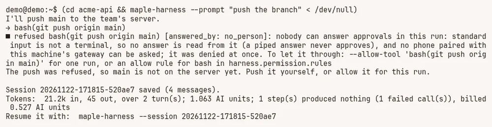
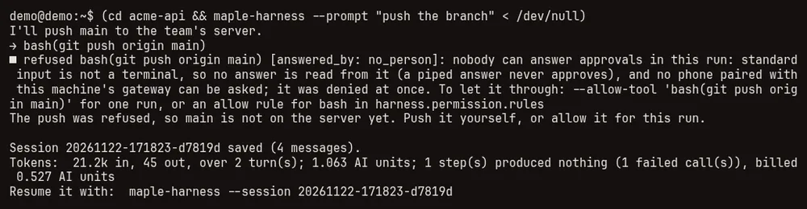

Using the harnessDay to day12 min read
Approvals when nobody answers #
On this page
- In plain words
- Who can answer, run by run
- How long a question waits
- Runs with no terminal
- Rules for one run
- Seeing what was refused
- Exit status 4
- Answer from your phone
- Sessions with nobody at the terminal
- Work another agent sent
- Waiting for a heavy-run slot
- Settings
- Technical details
- Troubleshooting
- What has been checked
- See also
The agent asks you before it runs a tool call your rules do not settle. Sometimes nobody is there to answer: you stepped away, the run is a script, or it serves another agent. In 3.0 a question like that never holds a run forever and never approves anything by itself. That one call is denied, the refusal is recorded with the reason and what would let it through, and the run carries on.
In plain words #
- What it is. A limit on how long an approval waits, and a clear answer for runs where nobody can be asked.
- Unanswered means no. A question nobody answers in 10 minutes (
harness.approvals.timeout) is denied. A run where nobody can be asked at all denies it at once. Nothing is allowed or remembered either way. - A piped "y" approves nothing. Standard input that is not a terminal is never read for approvals.
- You see every refusal. On the error stream, in
--json-summary, to the model, and as a notification. - Scripts say what they allow.
--allow-tool,--deny-tooland--policygive one run its own rules, written as in Maple, Claude Code or Copilot CLI. A deny rule of yours always wins. - Your phone can answer. A run with no terminal shows its approvals on a paired phone when this machine's gateway is running.
- What to do. Nothing, usually. For a script, list what it may do with
--allow-tool. To wait as long as it takes, as before 3.0, setharness.approvals.timeout: off.
Who can answer, run by run #
| Where it runs | Who can answer | When nobody answers or can |
|---|---|---|
| The full-screen terminal | You, in the terminal; a phone or browser while the session is shared | Denied after harness.approvals.timeout |
--prompt or --repl at a terminal | You, at the allow …? line | Denied after the timeout |
--prompt with no terminal on standard input | A paired phone, when this machine's gateway runs (below) | Denied at once with no phone, else after the timeout |
--repl with no terminal on standard input | Nobody | Denied at once |
maple-harness serve, or a remote host with no terminal | A phone or browser connected, or a paired device that may drive sessions | Denied at once when neither, else after the timeout |
--rpc | The program driving the session | Denied after the timeout |
maple-harness a2a serve | The calling agent, within limits, and a paired phone (A2A) | Denied after harness.a2a.question_timeout |
The wait pauses while a phone or browser that may answer has the session open: someone there may be about to answer. A watch-only device or a read-only shared link does not pause it. The pause is bounded: whatever is open, a question is denied after three times the timeout in all.
How long a question waits #
harness.approvals.timeout is 10m by default. It takes off, 1m, 2m, 5m, 10m, 15m or 30m.
- When it runs out, that one call is denied and recorded as
answered_by: timeout. The model is told and the run goes on, so it can try another way or say what it could not do. offwaits as long as it takes, as before 3.0.- It holds in the full-screen terminal, the plain prompt at a terminal, shared sessions,
servehosts and--rpc. - It is yours: a project's own config cannot set it.
In the plain prompt the line after the question says so:
allow bash(git push origin main)? [y]es / [N]o / [a]lways for bash this session:
(no answer within 10m: denied; harness.approvals.timeout)Change it in /settings (filter approvals) or in config.yaml:
harness:
approvals:
timeout: 30m # off | 1m | 2m | 5m | 10m | 15m | 30m
refusal_exit_code: "off" # on: a --prompt run that refused a call exits 4The model's own questions (a choice between options) have their own setting,
harness.questions.timeout.
Runs with no terminal #
When standard input is a pipe, a file or closed (a CI job, echo … | maple-harness --prompt …), nothing on it is read as an
answer. Each question is denied at once as answered_by: no_person, and the reason names what would allow it, for
example --allow-tool 'bash(git push origin main)' or an allow rule in harness.permission.rules.
At a terminal, --prompt and --repl still ask as before, now with the timeout.
Some questions ask even in auto or yolo mode, because they act outside the session or are approved one run at a
time. In a --prompt run where nobody can be reached, these are denied with a reason that says what would allow them
(where a rule can) or where to run instead; with someone reachable they ask as usual:
- typing into another agent or a pane, starting an agent, opening a pane or a worktree, and starting a monitor: an
allow rule (or
--allow-tool) for the tool lets it through; - the cost preview's confirmation;
- a subagent's question to carry on past its budget: unanswered, that subagent stops;
- applying a subagent's changes (
merge_worktree):--allow-tool merge_worktreeallows it; - the confirmations of your local Claude: unanswered, it does not run.
--resume without a terminal no longer reads a line to pick a session. With one saved session in this folder it
resumes that one; with several it fails, lists them, and says to use --session <name> or --continue.
Rules for one run #
Four flags work with --prompt, --repl, --rpc and the full-screen interface (not with serve or a2a serve):
| Flag | What it does |
|---|---|
--allow-tool | Allow calls matching the rule without asking, for this run. Repeatable |
--deny-tool | Deny calls matching the rule, for this run. Repeatable |
--policy FILE | Read allow, deny and ask lists from a YAML or JSON file |
--refusal-exit-code | With --prompt: exit with status 4 when a call was refused because nobody answered (below) |
maple-harness --prompt "run the tests and fix what fails" \
--allow-tool 'Bash(go test:*)' --allow-tool edit_file --deny-tool 'shell(git push)'At the start the run says what it allows:
note: allowed for this run: bash(go test), bash(go test *), edit_file (a deny rule of yours still wins)How a rule is written #
Maple's own form, as in harness.permission.rules, works as it is:
bash(git status*), read_file, mcp__github__create_issue. The forms Claude Code and Copilot CLI use are read too:
| You write | It means |
|---|---|
Bash(…), shell(…) | bash |
Read, Edit, MultiEdit, Write, Grep | read_file, edit_file, edit_file, write_file, grep |
Write, and Copilot CLI's write | write_file and edit_file |
A path in Claude Code's form: ./src/*, //etc/*, ~/notes/* | src/*, the absolute /etc/*, under your home folder |
Bash(npm run test:*), shell(git:*) | The command alone, or followed by anything (npm run test, npm run test -- -v) |
My-Server(create_issue) (Copilot CLI) | That MCP server's tool, mcp__My-Server__create_issue |
mcp__docs__* or mcp__docs (Claude Code) | Every tool of the docs MCP server; a deny of it denies the server's resources too (mcp_resources(docs)) |
Anything with * | A pattern, where * matches any text |
An allow is read exactly: --allow-tool 'bash(git status)' allows git status and nothing longer. A deny is
read broadly: --deny-tool 'shell(rm)' also denies rm with any arguments, a deny of Edit or Write covers both
file tools, and Read(./.env) denies reading any path with .env in it. A rule for edit_file also covers
multi_edit, apply_patch and lsp_rename, file by file, and a patch that deletes a file always asks: see
Several edits, patches and renames.
- A chain is never allowed by a rule for one run.
Bash(git status:*)allowsgit status --short, notgit status && rm -rf ~,git status; …, a pipe,$( … ), backquotes or a redirection: your config decides those, as it would without the flag (usually by asking). A run's deny is checked against each command of a chain, so--deny-tool 'shell(curl)'also refusestrue && curl …. Readwith a path cannot be allowed for one run. The rules readread_file's arguments as written, so such an allow could not be matched exactly; it is refused at start. AllowRead(orread_file) by name instead.
Which wins #
- A deny rule for this run always wins.
- A deny rule in your config always wins, wherever it sits in your list: no run allow gets past it.
- An ask rule for this run makes the call ask.
- An allow rule for this run lets through what your config asks about or does not mention.
A policy file #
# ci-policy.yaml
allow: ["Bash(go test:*)", "Bash(go vet:*)", read_file, edit_file]
deny: ["bash(git push*)"]
ask: ["write_file(*.env)"]maple-harness --prompt "fix the failing test" --policy ci-policy.yaml --json-summary run.jsonJSON with the same three lists works too. An unknown key is an error, so a typo does not go unnoticed. Rules from
--allow-tool and --deny-tool are added to the file's.
Seeing what was refused #
Every call denied because nobody answered (or nobody could) shows up in five places:


--prompt run with no terminal to ask: refused at once, said on the error stream, and the model told. A demo setup with a scripted model.The error stream, in
--promptand--repl, as it happens:■ refused bash(git push origin main) [answered_by: no_person]: nobody can answer approvals in this run: standard input is not a terminal, so no answer is read from it (a piped answer never approves), and no phone paired with this machine's gateway can be asked; it was denied at once. To let it through: --allow-tool 'bash(git push origin main)' for one run, or an allow rule for bash in harness.permission.rules--json-summary, in arefusalslist, withmore_refusalscounting any past the ones listed:JSON"refusals": [ {"tool": "bash", "what": "git push origin main", "answered_by": "timeout", "reason": "nobody answered within 10m (harness.approvals.timeout), so it was denied and nothing was remembered", "allow_with": "--allow-tool 'bash(git push origin main)' for one run, or an allow rule for bash in harness.permission.rules", "at": "2026-11-22T10:04:05Z"} ]Field Meaning toolThe tool, or the kind of question ( agent_budget,merge_worktree)whatWhat it would have done, on one line, with secrets hidden answered_bytimeout(nobody answered in time),no_person(nobody could be asked) orcaller(an A2A caller said deny)reasonWhy, in words allow_withThe flag, rule or setting that would let it through, or where to run it when nothing can atWhen, in UTC The model is told
tool call denied (answered_by: …)with the reason, so it can try another way.A notification, through
harness.notifications: therefusedevent, on by default once you have a destination. Its title isRefused without you; it names the tool only withinclude_tool, and never what the call would have done.Hooks: the
PermissionResulthook's input hasanswered_by:person,timeout,no_person, orcaller(an A2A caller allowed or denied it). See Hook files.
Exit status 4 #
A --prompt run that finished but refused a call because nobody answered exits with 0, as before, so scripts
that read the status keep working. To tell such a run apart, set harness.approvals.refusal_exit_code: on, or pass
--refusal-exit-code for one run: it then exits with 4.
| Status | Means |
|---|---|
| 0 | The run finished |
| 1 | An error |
| 3 | The run stopped because the same problem kept failing (this wins over 4) |
| 4 | The run finished, and refused at least one call nobody answered (only when asked for) |
Answer from your phone #
A --prompt run with no terminal on standard input, and maple-harness a2a serve, show up on your phone when both
hold:
- this machine's gateway is already running (
maple-harness gateway start, or/remotein a session): such a run never starts one; - a device that may drive sessions is paired.
The run then appears in the phone's session list as a session that takes approvals only. You can answer its approvals and interrupt it; you cannot send it messages, change its mode or model, or run commands in it. With the gateway's notifications on, each question is pushed to the phone. Only drive devices answer: a watch-only device and a shared link can read the session but not answer. The timeout applies, paused while the phone has the session open. The run says on its error stream that its approvals go to your phone and how long each waits.
Sessions with nobody at the terminal #
A session started with maple-harness serve (through the gateway or on its own port), or a remote host whose
terminal is gone, asks only while someone can answer: a phone or browser connected, or a paired device that may
drive sessions (pushed a notification when the gateway's notifications are on). With neither, a question is denied
at once (no_person). The model's own questions go to a client only while one is connected.
A pane_run into a pane whose program Maple does not know is put to the phone when one is paired, as it would be to
you in the terminal. See Which panes pane_run asks about.
Work another agent sent #
A turn started by another agent's message, and a session that agent_start opened in a pane, ask you about
their tool calls: the agent that sent the work never answers them, and neither does the session's control socket.
Past the timeout they are denied, and the session's reply tells the sending agent that you did not answer.
Agents calling over A2A have their own rules: see Who may approve what.
Waiting for a heavy-run slot #
When limits.heavy_runs holds back a test suite or a build because another one runs, the wait
is bounded too. Past it the command is not run and the model is told why.
| Setting | Default | Where |
|---|---|---|
harness. | 30m | A session you use |
harness. | 10m | Runs nobody watches: --prompt, --rpc, serve, a2a serve |
Both take 1m, 2m, 5m, 10m, 15m, 30m or 1h. Before 3.0 the wait was 30 minutes everywhere.
Settings #
| Setting | Default | What it does |
|---|---|---|
harness. | 10m | How long a question about a tool call waits before that call is denied. off waits as long as it takes. Not settable from a project's config |
harness. | off | on: a --prompt run that refused a call nobody answered exits with 4 |
harness. | 10m | The same wait for an A2A task. Not settable from a project's config |
harness. | none | A2A tokens whose callers may approve ordinary asks |
harness., harness. | 30m, 10m | The longest wait for a heavy-run slot |
harness. | includes refused | Leave refused out to stop those notices |
Each is in /settings and in config.yaml. See Harness settings.
Technical details #
- Never an allow. A timeout or a missing person always ends in a deny for that one call. "Always" is never recorded from it, and the next call asks again.
- The pause. The countdown stops while a phone or browser that may answer has the session open (a device that drives sessions, or a share that drives its own), and resumes when it leaves; never for longer than three times the timeout in all.
- Type-ahead. At a terminal (Linux), what was typed before a question appeared is discarded when it is asked, so
a stray
ynever answers a question you have not seen. Not yet on macOS or Windows. - Over
--rpc, the driving program answerspermission_requestas before; unanswered past the timeout, the call is denied and apermission_resolvedevent follows. See Drive it from another program. - Before 3.0 an A2A question left unanswered was recorded as
a2a (no answer in time); it is nowtimeout.
Troubleshooting #
| You see | Why | What to do |
|---|---|---|
■ refused … [answered_by: no_person] in a CI job | Nobody can be asked in a run with no terminal | Add the rule it names with --allow-tool or --policy, or an allow rule in your config |
■ refused … [answered_by: timeout] | Nobody answered within harness.approvals.timeout | Answer sooner, raise the timeout, or allow the call with a rule |
A piped y did not approve | Input that is not a terminal is never read for approvals | Use --allow-tool instead |
| The run does not show on your phone | The gateway was not running when the run started, or no drive device is paired | maple-harness gateway start first; pair a device that may drive sessions |
--resume fails listing sessions | Standard input is not a terminal, so it cannot ask which one | --session <name>, or --continue for the newest |
| A command says it waited too long for a heavy-run slot | Another suite held the slot past heavy_wait or heavy_wait_headless | Raise the wait, or limits.heavy_runs |
What has been checked #
Checked on Linux with automated tests: the plain prompt with and without a terminal (a piped answer never approves),
the timeout in the full-screen terminal and in a shared session, denial at once with nobody to reach, --json-summary
and exit status 4, the rules for one run, an approvals-only session, and A2A end to end with the real programs (an
ungranted caller's allow refused). macOS and Windows, and a push to a real phone for these runs, have not been tried.
See also #
- Questions the agent asks you The model's own multiple-choice questions, and their timeout.
- Agents that call agents (A2A) What a calling agent may approve, and how to grant it more.
- Control it from your phone Pair a phone that answers approvals.
- Harness settings Every setting, permission rules included.